🗳 Votante
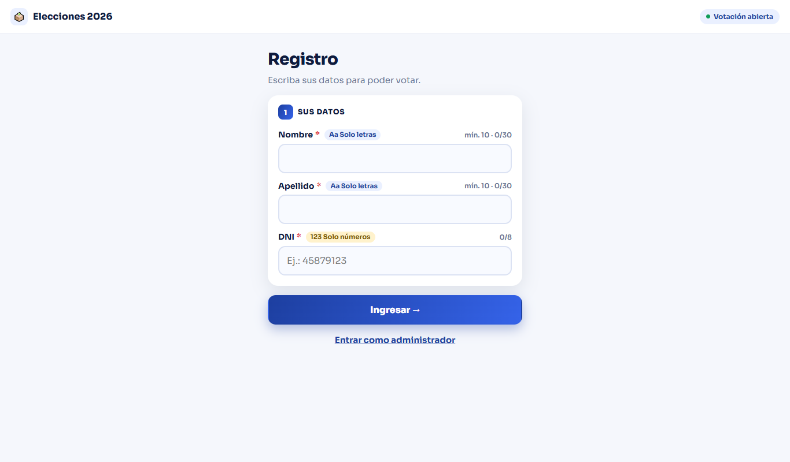
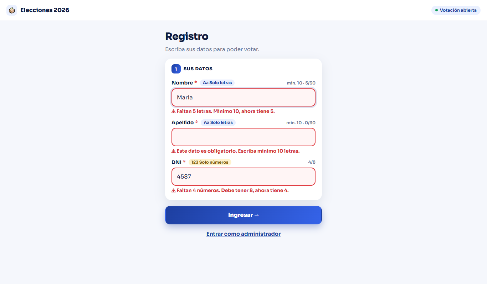
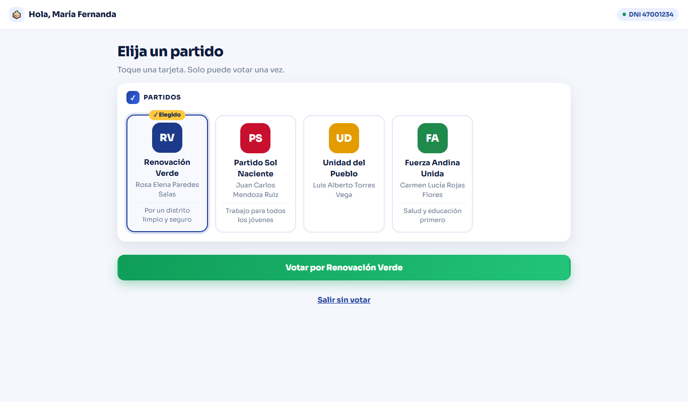
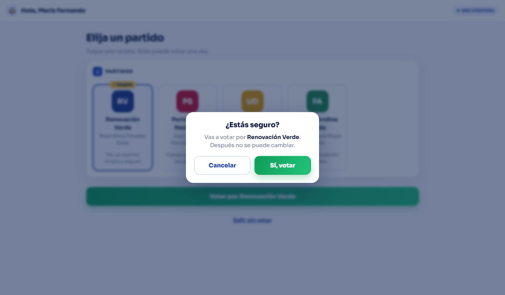
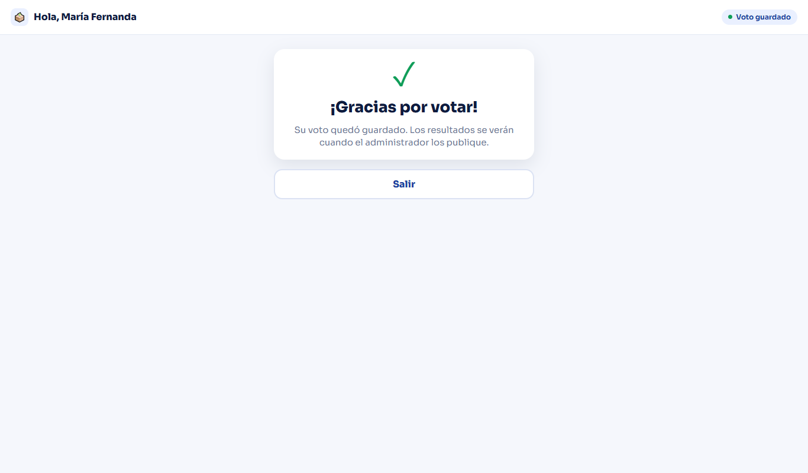
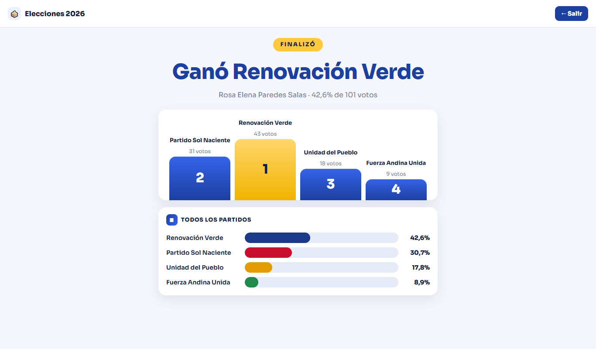
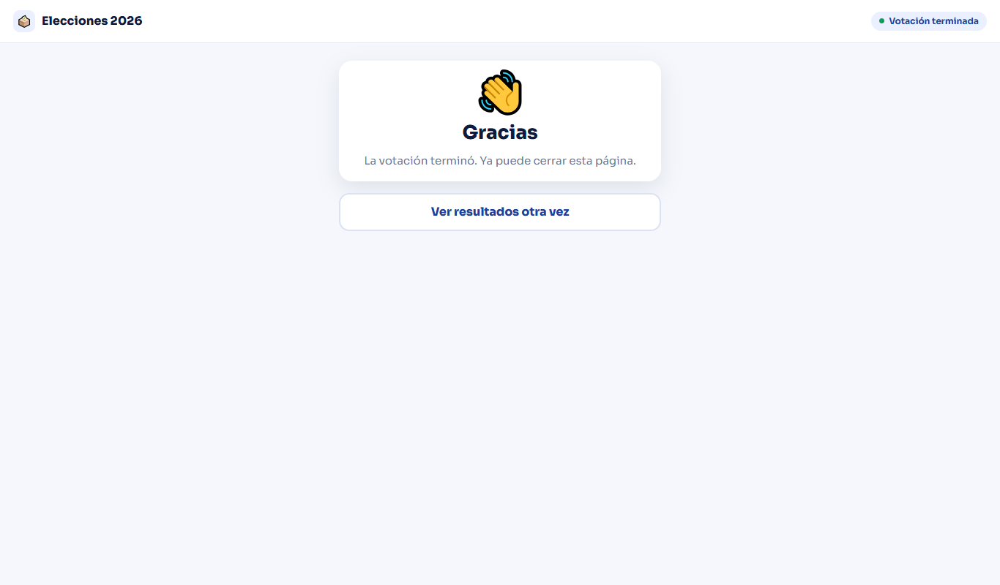
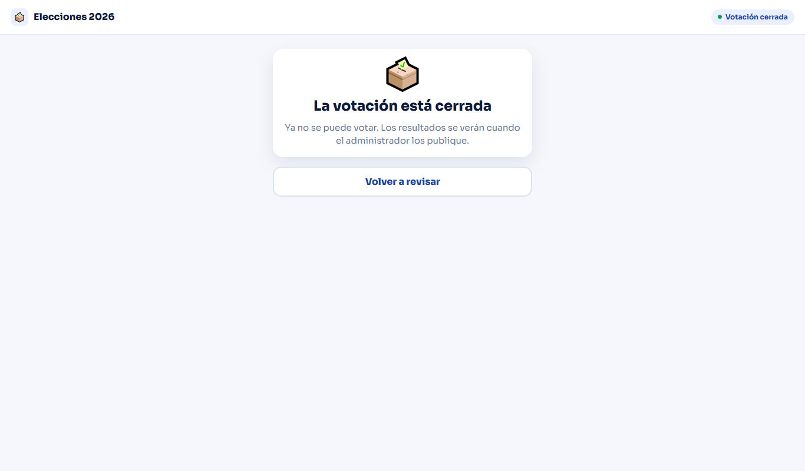
🔒 Administrador
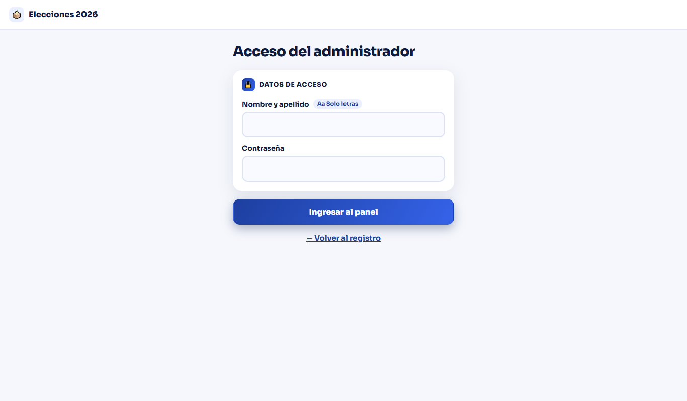
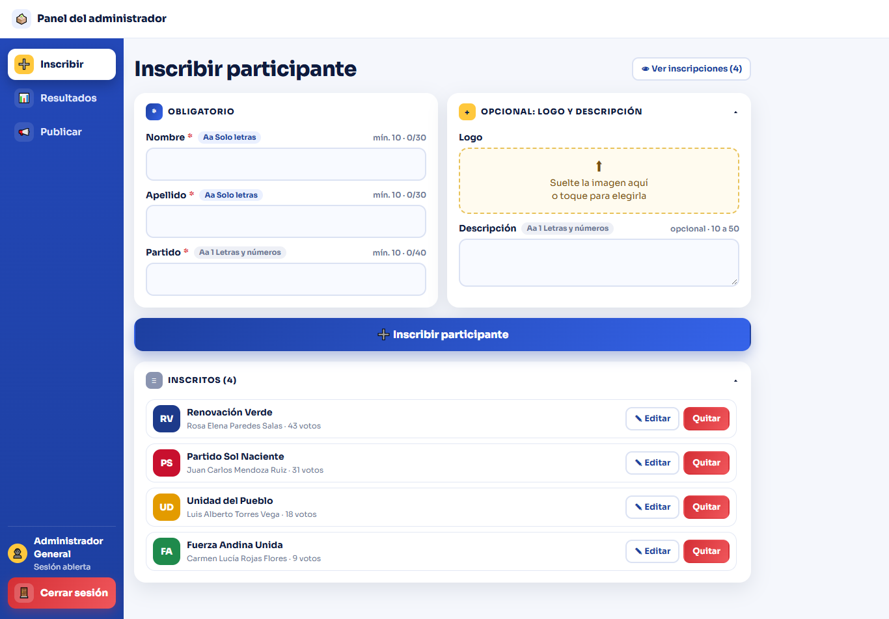
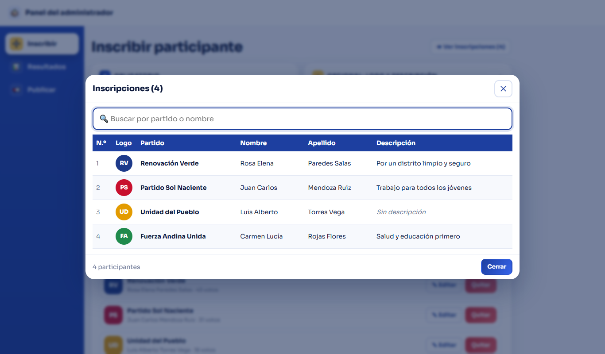
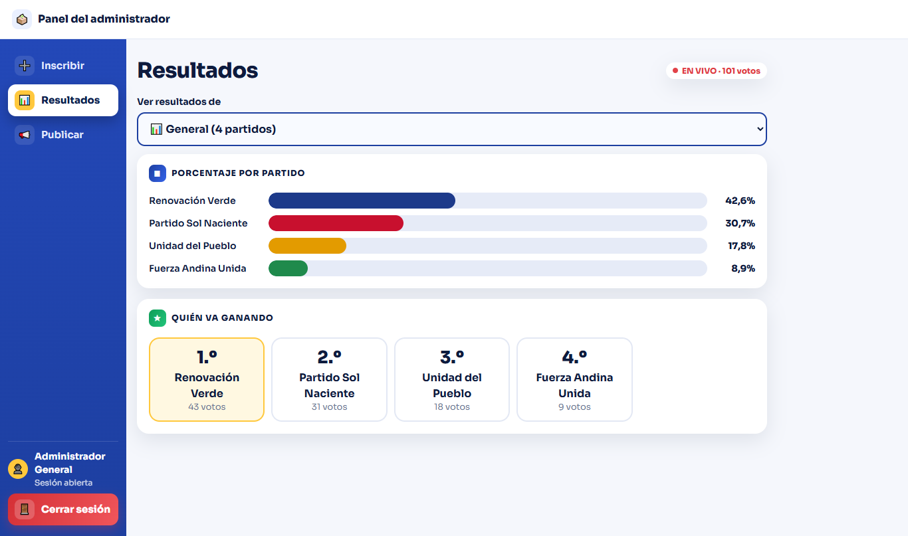
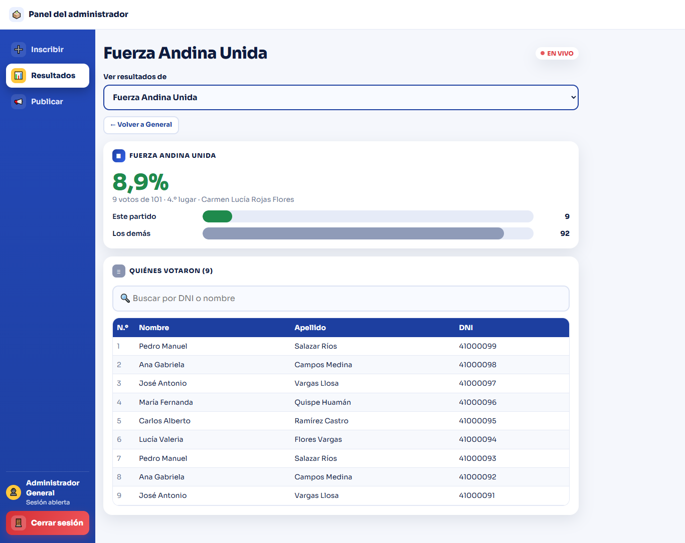
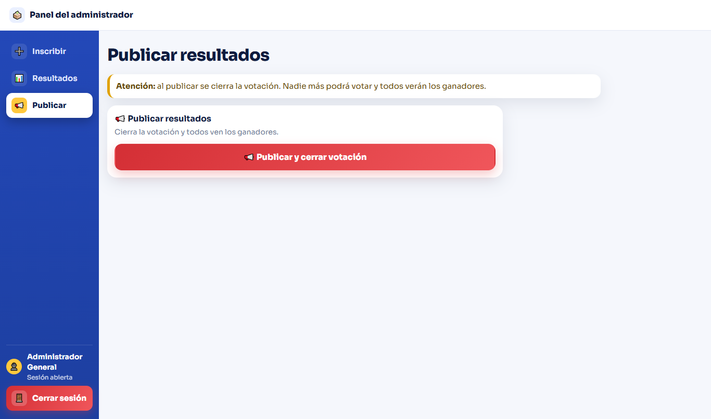
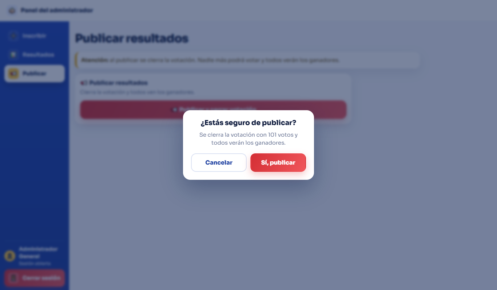
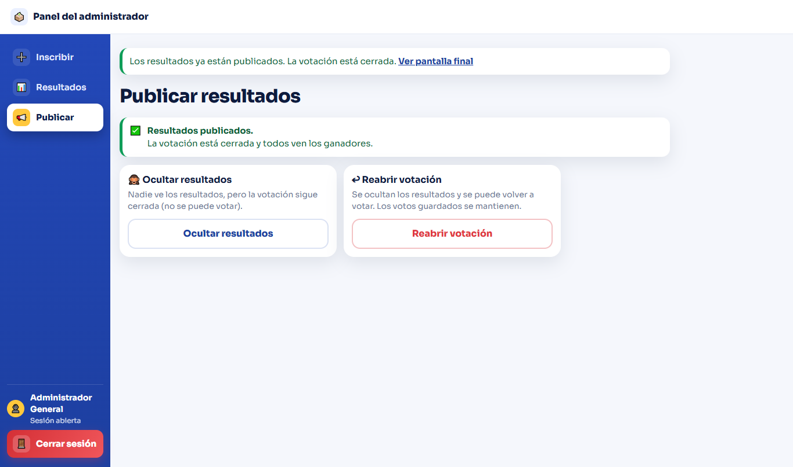
Capturas reales de la app (pantalla de 1366 px) con fondo blanco, azul en el menú y los botones, y dorado y verde de detalle. Toca una imagen para verla entera.















